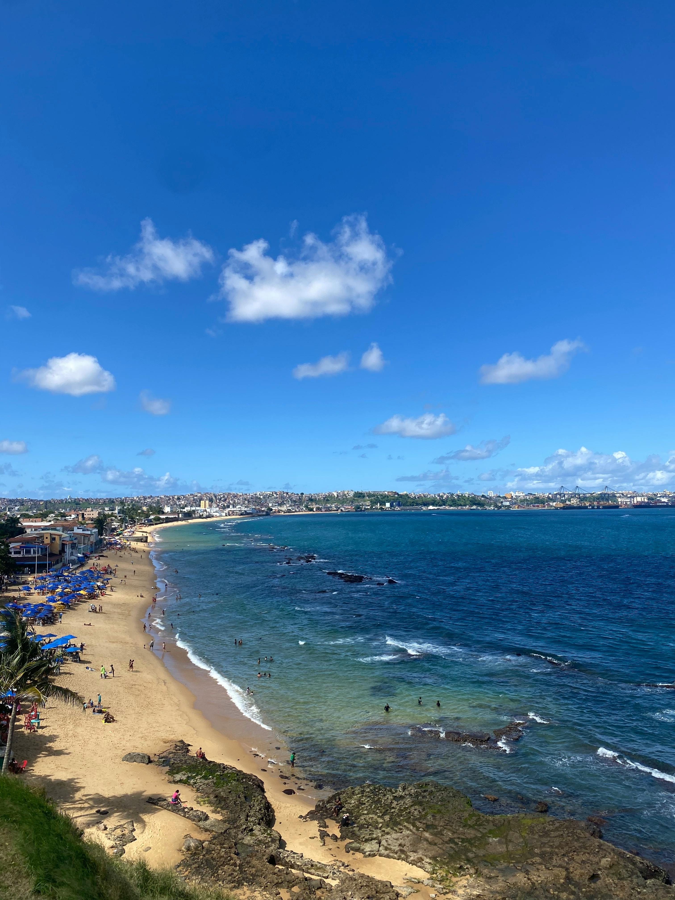

Best Travel Tips
- Best time to visit: December to March for beaches; May to September for the Amazon and Pantanal.
- Visa requirements: Check if your country requires a visa; many do not for short stays.
- Language: Portuguese is the official language; learning basic phrases is helpful.
- Safety: Be cautious in crowded areas and avoid walking alone at night.
- Local customs: Warm greetings; use "Senhor" or "Senhora" for politeness.
- Money: The Brazilian Real (BRL) is the currency; carry cash for rural areas.
Best Cuisines and Dining Recommendations
Brazilian cuisine blends indigenous, African, and European influences with regional specialties:
- Feijoada: Black bean stew with pork, traditionally served with rice and collard greens.
- Pão de Queijo: Cheese bread made with cassava flour, popular as a snack.
- Moqueca: Seafood stew with coconut milk and spices, typical in coastal regions.
- Brigadeiro: Sweet treat made from condensed milk, cocoa, and chocolate sprinkles.
- Churrasco: Barbecue featuring grilled meats, often served with farofa and vinagrete.
- Acarajé: Fried ball of black-eyed peas filled with shrimp, popular in Bahia.
Best Accommodation Options

From luxury hotels to budget-friendly hostels, Brazil offers various accommodation options:
- Luxury Hotels: Renowned chains like Belmond Copacabana Palace in Rio.
- Mid-range Options: Boutique hotels offering a blend of comfort and local charm.
- Hostels: Budget-friendly, often with communal areas for socializing.
- Airbnb: Unique stays in residential areas, offering a local experience.
- Eco-lodges: Sustainable options in the Amazon and Pantanal for nature lovers.
Best Local Culture and Traditions
Brazilian culture is rich and vibrant, with deep-rooted traditions:
- Music and Dance: Samba and bossa nova reflect the lively spirit of the nation.
- Carnival: A world-famous festival showcasing music, dance, and elaborate parades.
- Capoeira: A unique martial art combining dance and music, originating from African traditions.
- Football: A national passion, with iconic players like Pelé and Neymar.
- Literature and Arts: Notable figures include Jorge Amado and Tarsila do Amaral.
Best Top Tourist Attractions

- Christ the Redeemer: Iconic statue offering stunning city views.
- Amazon Rainforest: Explore its vast biodiversity and indigenous communities.
- Iguaçu Falls: A breathtaking waterfall system spanning Brazil and Argentina.
- Salvador: Known for Afro-Brazilian culture and vibrant architecture.
- Pantanal: A wildlife paradise for nature enthusiasts.
- Chapada Diamantina: Stunning landscapes and adventure opportunities.
Best Transportation Guides
Traveling around Brazil is convenient with a variety of transportation options:
- Air Travel: Major airlines connect cities; domestic flights are common.
- Buses: Extensive networks provide affordable travel between regions.
- Subways: Available in major cities like São Paulo and Rio for urban travel.
- Ridesharing: Services like Uber are widely available.
- Car Rentals: Offers flexibility for exploring rural and natural areas.
Best Outdoor Activities and Adventure
Brazil is a haven for outdoor enthusiasts with diverse activities:
- Hiking: Trails in national parks like Chapada Diamantina.
- Wildlife Tours: Birdwatching and wildlife spotting in the Pantanal.
- Beach Activities: Surfing, snorkeling, and sunbathing on beautiful beaches.
- Amazon River Tours: Kayaking and boat trips through the rainforest.
- Cultural Experiences: Participate in local festivals and traditions.
Best Shopping and Souvenirs

Explore local markets and shops for unique souvenirs:
- Handicrafts: Colorful textiles, pottery, and wood carvings from local artisans.
- Local Foods: Buy traditional snacks like cachaça and brigadeiros.
- Fashion: Brazilian swimwear and beachwear are popular purchases.
- Jewelry: Look for unique pieces made from Brazilian gemstones.
- Souvenir Shops: Visit shops in tourist areas for mementos like T-shirts and keychains.
Best Weather and Best Time to Visit
Understanding Brazil's climate helps you plan the perfect trip:
- Seasons: Brazil experiences summer (December to February) and winter (June to August).
- Regional Differences: Northern regions are hot and humid, while southern regions can get cooler.
- Rainy Season: The Amazon and northeastern areas have distinct rainy seasons; plan accordingly.
- Best Travel Months: March to May and August to November for pleasant weather.
- Festivals: Plan for Carnival (February/March) for a vibrant experience.